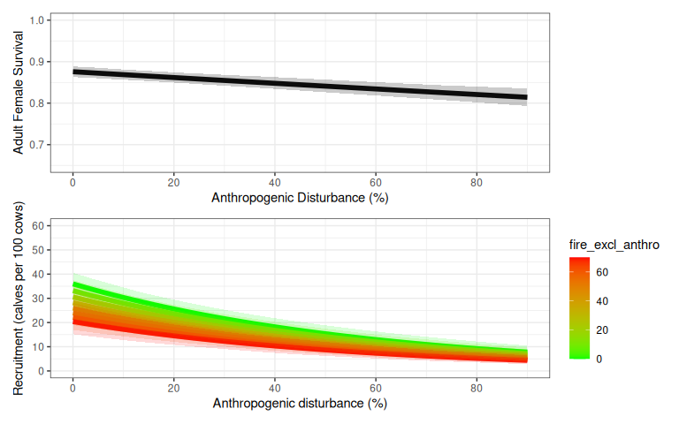
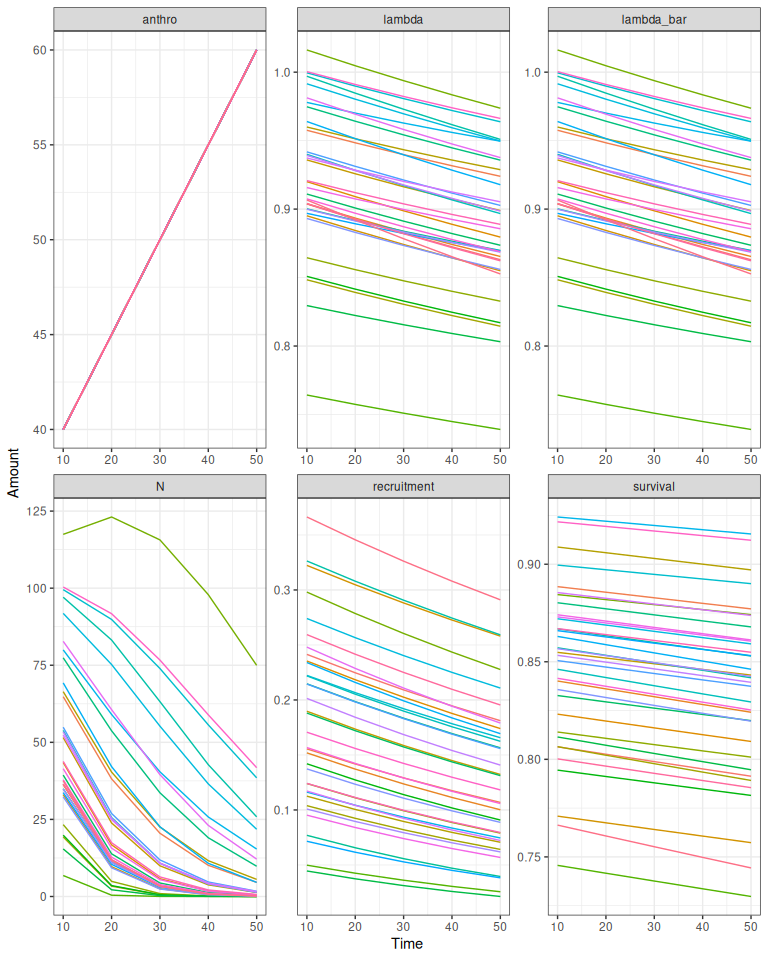
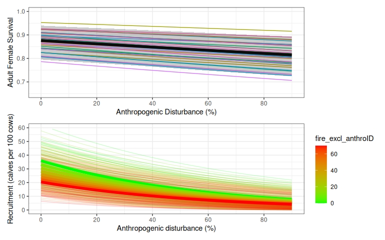
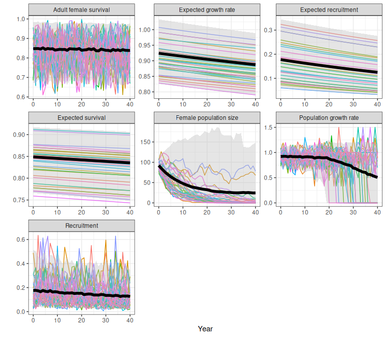
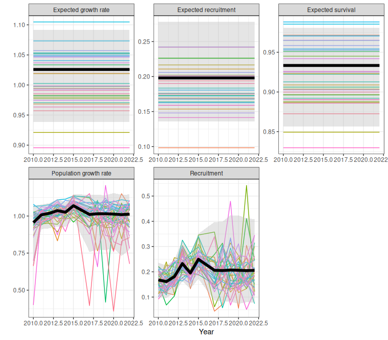
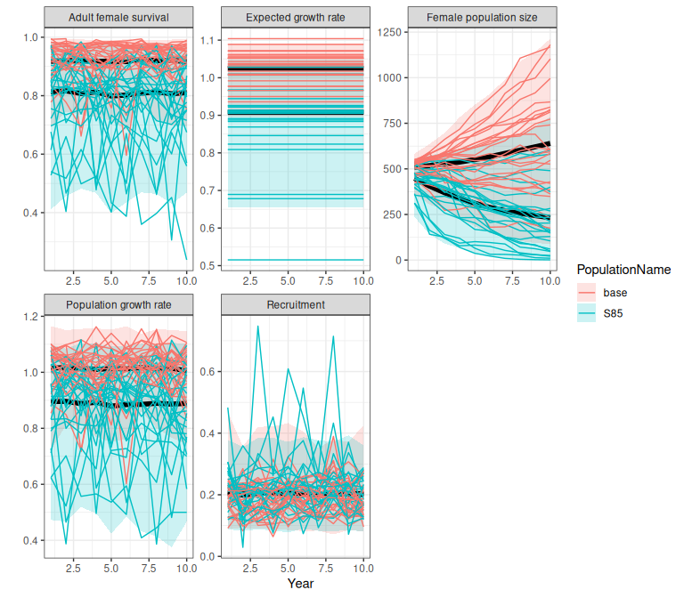

Caribou Demographic Rates and Trajectories
Source:vignettes/caribouDemography.Rmd
caribouDemography.Rmd1 Demographic rates and trajectories from the national model
1.1 Overview
Here we describe a demographic model with density dependence and interannual variability following Johnson et al. (2020) with modifications noted in Hughes et al. (2025) and Dyson et al. (2022). Demographic rates vary with disturbance as estimated by Johnson et al. (2020). A detailed description of the model is provided in (Hughes et al. 2025, sec. 2.4).
getNationalCoefficients() selects the regression coefficient values and standard errors for the desired model version (see popGrowthTableJohnsonECCC for options) and then samples coefficients from these Gaussian distributions for each replicate population.
Next estimateNationalRates() is used to apply the sampled coefficients to the disturbance covariates to calculate expected recruitment and survival according to the beta regression models estimated by Johnson et al. (2020). Each population is optionally assigned to quantiles of the Beta error distributions for survival and recruitment. Using quantiles means that the population will stay in these quantiles as disturbance changes over time, so there is persistent variation in recruitment and survival among example populations.
Finally, we can use the estimated demographic rates to project population dynamics using a simple model with two age classes. Interannual variation in survival and recruitment is modelled using truncated Beta distributions.
library(caribouMetrics)
# use local version on local and installed on GH
if (requireNamespace("devtools", quietly = TRUE)) devtools::load_all()
library(dplyr)
library(ggplot2)
library(tidyr)
library(patchwork)
theme_set(theme_bw())
pthBase <- system.file("extdata", package = "caribouMetrics")
figWidth <- 8; figHeight <- 101.2 Demographic outcomes in a simple case no variation in disturbance over time or among populations
A simple case for demographic projection is multiple stochastic projections from a single landscape that does not change over time. First we define a disturbance scenario with 40% anthropogenic disturbance and 2% fire disturbance. If we had spatial data for the disturbance in our area of interest we could use disturbanceMetrics() to directly calculate the disturbance. (See Disturbance Metrics vignette for an example).
disturbance <- data.frame(Anthro = 40, fire_excl_anthro = 2)We begin by sampling coefficients for 500 replicate populations using default Johnson et al. (2020) models “M1” and “M4”. The returned object is a list containing the coefficients and standard errors from the national model as well as the sampled coefficients and the quantiles that they have been assigned to.
popGrowthPars <- getNationalCoefficients(500)
head(popGrowthPars$coefSamples_Survival$coefSamples)
#> Intercept Anthro Precision
#> [1,] -0.1530718 -0.0008907556 60.65168
#> [2,] -0.1399809 -0.0007155384 61.65165
#> [3,] -0.1612743 -0.0007628660 68.57570
#> [4,] -0.1420441 -0.0007747503 52.81483
#> [5,] -0.1370847 -0.0009535161 52.68192
#> [6,] -0.1329182 -0.0008050787 60.32032
head(popGrowthPars$coefSamples_Survival$coefValues)
#> Intercept Anthro Precision
#> <num> <num> <num>
#> 1: -0.142 -8e-04 63.43724
head(popGrowthPars$coefSamples_Survival$coefStdErrs)
#> Intercept Anthro Precision
#> <num> <num> <num>
#> 1: 0.007908163 0.000127551 8.272731
head(popGrowthPars$coefSamples_Survival$quantiles)
#> [1] 0.25345691 0.02880762 0.89123246 0.36007014 0.55806613 0.19063126Next we calculate sample demographic rates given sampled model coefficients and disturbance metrics for our example landscape, setting returnSample = TRUE so that the results returned contain a row for each sample in each scenario. We set the initial population size for each sample population to 100, and project population dynamics for 20 years using the caribouPopGrowth function with default parameter values. Anthropogenic disturbance is high on this example landscape, so the projected population growth rate for most sample populations is below 1, but there is variability in the model so few sample populations persist.
rateSamples <- estimateNationalRates(
covTable = disturbance,
popGrowthPars = popGrowthPars,
ignorePrecision = FALSE,
returnSample = TRUE,
useQuantiles = FALSE)
rateSamples$N0 <- 100
demography <- cbind(rateSamples,
caribouPopGrowth(N = rateSamples$N0,
numSteps = 20,
R_bar = rateSamples$R_bar,
S_bar = rateSamples$S_bar))![Variation in demographic rates and outcomes among 500 sample populations after a 20 year projection. Anthropogenic disturbance is 40%, fire disturbance is 2%. 'lambda' is realized population growth rate in the final year, and 'lambdaE' is expected population growth rate without interannual variation, density dependence or demographic stochasticity. 'N' is the number of adult females, which includes new recruits 'n_recruits' and survivors 'surviving_adFemales' from the previous year. 'R_bar/S_bar' are the expected recruitment (calf:cow ratio) and survival rates, 'R_t/S_t' are the recruitment and survival rates in the final year, which are more variable because they include interannual variation. 'X_t' is the recruitment rate adjusted for sex ratio and (optionally) composition survey bias - see Hughes et al. (2025) for details.](caribouDemography_files/figure-html/plotSimpleDemography-1.png)
Figure 1.1: Variation in demographic rates and outcomes among 500 sample populations after a 20 year projection. Anthropogenic disturbance is 40%, fire disturbance is 2%. ‘lambda’ is realized population growth rate in the final year, and ‘lambdaE’ is expected population growth rate without interannual variation, density dependence or demographic stochasticity. ‘N’ is the number of adult females, which includes new recruits ‘n_recruits’ and survivors ‘surviving_adFemales’ from the previous year. ‘R_bar/S_bar’ are the expected recruitment (calf:cow ratio) and survival rates, ‘R_t/S_t’ are the recruitment and survival rates in the final year, which are more variable because they include interannual variation. ‘X_t’ is the recruitment rate adjusted for sex ratio and (optionally) composition survey bias - see Hughes et al. (2025) for details.
TO DO: Use consistent labels for outcomes throughout
TO DO: show and explain outcome if no N0 provided.
1.3 Expected recruitment and survival: effects of disturbance and variation among populations
We can project demographic rates over a range of landscape conditions to recreate figures 3 and 5 from Johnson et al. (Johnson et al. 2020) and see the effects of changing disturbance on expected recruitment and survival. First we create a table of disturbance scenarios across a range of different levels of fire and anthropogenic disturbance.
covTableSim <- expand.grid(Anthro = seq(0, 90, by = 2),
fire_excl_anthro = seq(0, 70, by = 10))
covTableSim$Total_dist = covTableSim$Anthro + covTableSim$fire_excl_anthroWe again sample coefficients from default models M1 and M4. The sample of 500 is used to calculate averages, while the sample of 35 is used to show variability among populations.
# set seed so vignette looks the same each time
set.seed(34533)
popGrowthPars <- getNationalCoefficients(
500,
modelVersion = "Johnson",
survivalModelNumber = "M1",
recruitmentModelNumber = "M4",
populationGrowthTable = popGrowthTableJohnsonECCC
)
popGrowthParsSmall <- getNationalCoefficients(
35,
modelVersion = "Johnson",
survivalModelNumber = "M1",
recruitmentModelNumber = "M4",
populationGrowthTable = popGrowthTableJohnsonECCC
)Next we calculate expected survival and recruitment rates given sampled model coefficients. For the smaller sample we set returnSample = TRUE so that the results returned contain a row for each sample in each scenario. Setting useQuantiles = TRUE assigns each sample population to a quantile of the regression model error distributions for survival and recruitment, allowing variation among populations to persist as disturbance changes. For the larger sample we set returnSample = FALSE to get summaries of mean and variation across the samples.
Johnson et al’s (2020) Beta regression models estimate uncertainty about intercept and slope coefficients, and a precision parameter that describes variation among observations (Ferrari and Cribari-Neto 2004). To show the importance of considering both these sources of variation we compare results with ignorePrecision = TRUE and ignorePrecision = FALSE. If the goal is to estimate and visualize nationally applicable demographic-disturbance relationships then the precision parameter may not be of interest (Figure 1.2). If we are interested in the distribution of variation across the country it is essential to include both uncertainty about the regression coefficients and additional variation summarized by the precision parameter of the Beta regression model (Figure 1.3).
rateSamples <- estimateNationalRates(
covTable = covTableSim,
popGrowthPars = popGrowthParsSmall,
ignorePrecision = FALSE,
returnSample = TRUE,
useQuantiles = TRUE
)
rateSummaries <- estimateNationalRates(
covTable = covTableSim,
popGrowthPars = popGrowthPars,
ignorePrecision = FALSE,
returnSample = FALSE,
useQuantiles = FALSE
)
rateSummariesIgnorePrecision <- estimateNationalRates(
covTable = covTableSim,
popGrowthPars = popGrowthPars,
ignorePrecision = TRUE,
returnSample = FALSE,
useQuantiles = FALSE
)
Figure 1.2: Variation in expected survival and recruitment with disturbance. Bands (2.5% and 97.5% quantiles of 500 samples) show variation due to uncertainty about intercept and slope coefficients in Johnson et al’s (2020) Beta regression models.
![Variation in expected survival and recruitment with disturbance. Bands (2.5% and 97.5% quantiles of 500 samples) include both uncertainty about the regression coefficients and additional variation summarized by the precision parameter of Johnson et al's [-@johnson2020] Beta regression models. Faint coloured lines show example trajectories of expected demographic rates in sample populations, assuming each sample population is randomly distributed among quantiles of the beta distribution, and each population remains in the same quantile of the Beta distribution as disturbance changes.](caribouDemography_files/figure-html/withPrecision-1.png)
Figure 1.3: Variation in expected survival and recruitment with disturbance. Bands (2.5% and 97.5% quantiles of 500 samples) include both uncertainty about the regression coefficients and additional variation summarized by the precision parameter of Johnson et al’s (2020) Beta regression models. Faint coloured lines show example trajectories of expected demographic rates in sample populations, assuming each sample population is randomly distributed among quantiles of the beta distribution, and each population remains in the same quantile of the Beta distribution as disturbance changes.
1.4 Projection of population growth over time on a changing landscape: workflow details
In this example, we project 35 sample populations for 50 years on a landscape where the anthropogenic disturbance footprint is increasing by 5% per decade (Figure 1.4). Note the form of the growth model (density dependence, interannual variation, demographic stochasticity etc) can be changed by setting caribouPopGrowth function parameters; see XX for details.
numTimesteps <- 5
stepLength <- 10
N0 <- 100
AnthroChange <- 5 #For illustration assume 5% increase in anthropogenic disturbance footprint each decade
# at each time, sample demographic rates and project, save results
pars <- data.frame(N0 = N0)
for (t in 1:numTimesteps) {
covariates <- disturbance
covariates$Anthro <- covariates$Anthro + AnthroChange * (t - 1)
rateSamples <- estimateNationalRates(
covTable = covariates,
popGrowthPars = popGrowthParsSmall,
ignorePrecision = FALSE,
returnSample = TRUE,
useQuantiles = TRUE
)
if (is.element("N", names(pars))) {
pars <- subset(pars, select = c(replicate, N))
names(pars)[names(pars) == "N"] <- "N0"
}
pars <- merge(pars, rateSamples)
pars <- cbind(pars,
caribouPopGrowth(pars$N0,
R_bar = pars$R_bar, S_bar = pars$S_bar,
numSteps = stepLength))
# add results to output set
fds <- subset(pars, select = c(replicate, Anthro, N, S_bar,S_t, R_bar,R_t,lambdaE,lambda))
fds$replicate <- as.numeric(gsub("V", "", fds$replicate))
fds <- pivot_longer(fds, !replicate, names_to = "MetricTypeID", values_to = "Amount")
fds$Timestep <- t * stepLength
if (t == 1) {
popMetrics <- fds
} else {
popMetrics <- rbind(popMetrics, fds)
}
}
popMetrics$MetricTypeID <- as.character(popMetrics$MetricTypeID)
popMetrics$Replicate <- paste0("x", popMetrics$replicate)
# popMetrics <- subset(popMetrics, !MetricTypeID == "N")
Figure 1.4: Example demographic trajectories from the national model on a changing landscape. ‘lambda’ is realized population growth rate in the final year, and ‘lambdaE’ is expected population growth rate without interannual variation, density dependence or demographic stochasticity. ‘N’ is the number of adult females. ‘R_bar/S_bar’ are the expected recruitment (calf:cow ratio) and survival rates, ‘R_t/S_t’ are the recruitment and survival rates.
1.5 Using the trajectoriesFromNational wrapper function to project population growth
The examples above show steps in the demographic modeling workflow. We also provide a trajectoriesFromNational wrapper function that samples the coefficients from the National model, calculates demographic rates given those coefficients and the level of disturbance, projects population growth using caribouPopGrowth, and returns summaries of the demographic rates (ref workflow diagram). If the disturbance scenario includes a Year column trajectoriesFromNational projects population growth over time, and also returns sample demographic trajectories. If year is not provided, population growth is projected for one year, and sample trajectories are not returned.
TO DO: add trajectoriesFromNational workflow diagram
natTraj <- trajectoriesFromNational(replicates = 500,
disturbance = covTableSim, interannualVar = FALSE,
useQuantiles = TRUE)
# add year to return samples
natTraj35 <- trajectoriesFromNational(replicates = 35,
disturbance = covTableSim %>%
mutate(Year = Anthro+100*fire_excl_anthro),
returnSamples = TRUE, interannualVar = FALSE,
useQuantiles = TRUE)
Figure 1.5: Variation in expected survival and recruitment with disturbance, obtained using the trajectoriesFromNational wrapper function. See Figure 1.3 for details.
Using the same scenario with anthropogenic disturbance footprint increasing by 5% per decade, we
can also produce projections over a changing landscape with trajectoriesFromNational.
disturbance2 = data.frame(step = 0:4) %>% bind_cols(disturbance) %>%
mutate(Anthro = Anthro + AnthroChange * step,
Year = step * 10)
# set seed so vignette looks the same each time
set.seed(54545)
popMetrics2 <- trajectoriesFromNational(disturbance = disturbance2, replicates = 500,
useQuantiles = TRUE,N0 = 100, numSteps = 10)
popMetrics2$summary <- popMetrics2$summary %>%
filter(MetricTypeID %in% c("Anthro", "N", "Sbar","survival","Rbar","recruitment", "lambda_bar", "lambda"))
names <- popMetrics2$summary %>% select(MetricTypeID,Parameter) %>% unique();names
#> MetricTypeID Parameter
#> 1 lambda Population growth rate
#> 6 lambda_bar Expected growth rate
#> 11 N Female population size
#> 16 Rbar Expected recruitment
#> 21 recruitment Recruitment
#> 26 Sbar Expected survival
#> 31 survival Adult female survival
popMetrics2$samples <- merge(popMetrics2$samples,names) %>% filter(as.numeric(as.factor(Replicate))<=35)
proj <- ggplot(data = popMetrics2$summary,
aes(x=Year,y=Mean,ymin=lower,ymax=upper))+
geom_ribbon(fill="grey") +
geom_line(colour="black",linewidth=2)+
geom_line(data=popMetrics2$samples,aes(x=Year,y=Amount,colour=Replicate,group=Replicate,ymin=Amount,ymax=Amount)) +
facet_wrap(~Parameter, scales = "free") +
ylab("")+
theme(legend.position = "none")
proj
Figure 1.6: Example demographic trajectories and from the national model on a changing landscape, obtained using the trajectoriesFromNational wrapper function. Bands are the 2.5% and 97.5% quantiles of 500 samples.
2 Demographic rates and trajectories from bboutools Bayesian models
NOTE: To enable the QC app project and others we made several changes to bboutools. At present these examples only work with our modified version of bboutools. bboutools developers are integrating the changes into their main package, with an update to be released in spring 2026. Once they have finalized their methods and workflows we will update our code, tests, and documentation to be consistent with their updated package. Until all that is done these tools remain a work in progress - they should only be used by people who won’t be surprised or upset when we make changes. It is also important to note that we have very little capacity for user support at this time; time we spend supporting users will will delay progress on building, documenting, testing and publishing the tools.
2.1 Getting a fitted bboutools logistic model
See Comparing caribouMetrics (Beta) and bboutools (logistic) Bayesian models vignette for an overview of the Bayesian models. For this example we use a bboutools logistic model and example data.
library(bboudata)
library(bboutools)
useSaved <- T # option to skip slow step of fitting bboutools model
bbouInformativeFile <- here::here("results/vignetteBbbouExample.rds")
surv_data <- bboudata::bbousurv_a %>% filter(Year > 2010)
surv_data_add <- expand.grid(Year = seq(2017, 2022), Month = seq(1:12),
PopulationName = unique(surv_data$PopulationName))
surv_data <- merge(surv_data, surv_data_add, all.x = TRUE, all.y = TRUE)
surv_data$StartTotal[is.na(surv_data$StartTotal)] <- 1
recruit_data <- bboudata::bbourecruit_a %>% filter(Year > 2010)
recruit_data_add <- expand.grid(Year = seq(2017, 2022), PopulationName = unique(recruit_data$PopulationName))
recruit_data <- merge(recruit_data, recruit_data_add, all.x = TRUE, all.y = TRUE)
recruit_data$Month[is.na(recruit_data$Month)] <- 3
recruit_data$Day[is.na(recruit_data$Day)] <- 15
if (useSaved & file.exists(bbouInformativeFile)) {
bbouInformative <- readRDS(bbouInformativeFile)
} else {
bbouInformative <- estimateBayesianRates(surv_data, recruit_data,
return_mcmc = TRUE)
if (dir.exists(dirname(bbouInformativeFile))) {
saveRDS(bbouInformative, bbouInformativeFile)
}
}2.2 Using bboutools to project population growth
The bboutools R package includes methods for projecting calf:cow ratios, recruitment, survival, and population growth rate.
Note pop growth rate reported by bboutools is…
Note no density dependence or demographic stochasticity…
2.3 Using the trajectoriesFromBayesian wrapper function to project population growth
For convenience, to enable comparisons (e.g. Comparing caribouMetrics (Beta) and bboutools (logistic) Bayesian models vignette), and to integrate with other methods and workflows, we can use the trajectoriesFromBayesian wrapper function to get sample trajectories and summaries from our fitted bboutools model. Note that if we use only the information in the fitted model (that does not include initial population size) then the summary results (bands in Figure X) are identical to the bboutools projections (Figs X). The returned example trajectories are derived from the MCMC samples. If we also provide initial population size information then the projection (by default) includes density dependence and demographic stochasticity (dyson2022?; Hughes et al. 2025) (Fig X); . Note that in this case the form of the growth model (density dependence & demographic stochasticity, but not interannual variability) can be changed by setting caribouPopGrowth function parameters (e.g. Fig X no demographic stochasticity); see XX for details, but note that the Bayesian MCMC samples include interannual variation in recruitment and survival, so no additional interannual variation is added by caribouPopGrowth in this case.
TO DO: add trajectoriesFromBayesian workflow diagram
popMetricsBayes <- trajectoriesFromBayesian(bbouInformative)
popMetricsBayes$summary <- popMetricsBayes$summary %>%
filter(MetricTypeID %in% c("Anthro", "N", "Sbar","survival","Rbar","recruitment", "lambda_bar", "lambda"))
names <- popMetricsBayes$summary %>% select(MetricTypeID,Parameter) %>% unique();names
#> MetricTypeID Parameter
#> 1 lambda Population growth rate
#> 13 lambda_bar Expected growth rate
#> 25 N Female population size
#> 37 Rbar Expected recruitment
#> 49 recruitment Recruitment
#> 61 Sbar Expected survival
#> 73 survival Adult female survival
popMetricsBayes$samples <- merge(popMetricsBayes$samples,names) %>% filter(as.numeric(as.factor(Replicate))<=35)
proj <- ggplot(data = popMetricsBayes$summary,
aes(x=Year,y=Mean,ymin=lower,ymax=upper))+
geom_ribbon(fill="grey") +
geom_line(colour="black",linewidth=2)+
geom_line(data=popMetricsBayes$samples,aes(x=Year,y=Amount,colour=Replicate,group=Replicate,ymin=Amount,ymax=Amount)) +
facet_wrap(~Parameter, scales = "free") +
ylab("")+
theme(legend.position = "none")
proj
Figure 2.1: Example demographic trajectories from a fitted bboutools model, obtained using the trajectoriesFromBayesian wrapper function. Bands are 95% predictive intervals.
2.4 Using the trajectoriesFromSummaries wrapper function to project population growth
To allow for the possibility of using fitted Bayesian models as a starting point for exploring demographic scenarios, the estimateBayesianRates function also returns a table of model parameters. The trajectoriesFromSummary projects outcomes from a model defined by these parameters. When parameters from a fitted Bayesian model are used, outcomes from trajectoriesFromSummary and trajectoriesFromBayesian are the same (compare Figs X and X) (though note we don’t yet have this working for dynamic disturbance scenarios). trajectoriesFromSummary allow us to explore the implications of changing model parameters (Fig X), and enables the scenario exploration in our Boreal Caribou Demographic Projection Explorer.
pt <- bbouInformative$parTab;pt
#> pop_name R_bar R_sd R_iv_mean R_iv_shape R_bar_lower R_bar_upper
#> 1 A 0.193378 0.2071858 0.3733476 2.228027 0.136304 0.270608
#> S_bar S_sd S_iv_mean S_iv_shape S_bar_lower S_bar_upper N0
#> 1 0.9435812 0.6158295 0.6422284 1.579427 0.8579385 0.9855566 NA
#> nCollarYears nSurvYears nCowsAllYears nRecruitYears
#> 1 185 12 NA 12
popMetricsBase <- trajectoriesFromSummary(numSteps=10,replicates=500,N0=500,R_bar=pt$R_bar,S_bar=pt$S_bar,
R_sd=pt$R_sd,S_sd=pt$S_sd,
R_iv_mean=pt$R_iv_mean,R_iv_shape=pt$R_iv_shape,
S_iv_mean=pt$S_iv_mean,S_iv_shape=pt$S_iv_shape,
scn_nm="base",doSummary=T)
#> Warning in convertTrajectories(trajs): NAs introduced by coercion
#> Warning in convertTrajectories(trajs): NAs introduced by coercion
popMetricsS85 <- trajectoriesFromSummary(numSteps=10,replicates=500,N0=500,R_bar=pt$R_bar,S_bar=0.85,
R_sd=pt$R_sd,S_sd=pt$S_sd,
R_iv_mean=pt$R_iv_mean,R_iv_shape=pt$R_iv_shape,
S_iv_mean=pt$S_iv_mean,S_iv_shape=pt$S_iv_shape,
scn_nm="S85",doSummary=T)
#> Warning in convertTrajectories(trajs): NAs introduced by coercion
#> Warning in convertTrajectories(trajs): NAs introduced by coercion
scnCompare <- list(summary=rbind(popMetricsBase$summary,popMetricsS85$summary),
samples=rbind(popMetricsBase$samples,popMetricsS85$samples))
scnCompare$summary <- scnCompare$summary %>%
filter(MetricTypeID %in% c("Anthro", "N", "Sbar","survival","Rbar","recruitment", "lambda_bar", "lambda"))
names <- scnCompare$summary %>% select(MetricTypeID,Parameter) %>% unique();names
#> MetricTypeID Parameter
#> 1 lambda Population growth rate
#> 2 lambda_bar Expected growth rate
#> 3 N Female population size
#> 4 recruitment Recruitment
#> 5 survival Adult female survival
scnCompare$samples <- merge(scnCompare$samples,names) %>% filter(as.numeric(as.factor(Replicate))<=25)
proj <- ggplot(data = scnCompare$summary,
aes(x=Year,y=Mean,ymin=lower,ymax=upper,fill=PopulationName,group=PopulationName))+
geom_ribbon(alpha=0.2) +
geom_line(linewidth=2,colour="black")+
geom_line(data=scnCompare$samples,aes(x=Year,y=Amount,colour=PopulationName,group=paste0(Replicate,PopulationName),ymin=Amount,ymax=Amount)) +
facet_wrap(~Parameter, scales = "free") +
ylab("")
proj
Figure 2.2: Comparison of demographic trajectories from a fitted bboutools model (base) and a scenario in which expected survival is increased to 85% (S85), obtained using the trajectoriesFromSummary wrapper function. Bands are the 2.5% and 97.5% quantiles of 500 samples.
2.5 References
Dyson, M., Endicott, S., Simpkins, C., Turner, J. W., Avery-Gomm, S., Johnson, C. A., Leblond, M., Neilson, E. W., Rempel, R., Wiebe, P. A., Baltzer, J. L., Stewart, F. E. C., & Hughes, J. (2022). Existing caribou habitat and demographic models need improvement for Ring of Fire impact assessment: A roadmap for improving the usefulness, transparency, and availability of models for conservation. https://doi.org/10.1101/2022.06.01.494350
Novomestky F, Nadarajah S (2016) Package ‘truncdist.’ Version 1.0-2URL https://CRAN.R-project.org/package=truncdist